Welcome to my Portfolio
This is where you can keep up with my latest work!
Zombie Warfare Game

About the Game:
Zombie Warfare was a game I along with two classmates, Tiffany and Eddie, had created. The game revolves around a Mother named Scarlett who is stranded on an island without ammunition and is on a mission to save her son Alonzo. The duty is yours to complete three levels in order to save Alonzo and escape the island infested with zombies. (Check out the game on Scratch! Feel free to leave me any feedback about the game through Scratch. Enjoy!)
Reflection:
The beginning of this process of creating Zombie Warfare was September 5th, 2017 where the class scattered to find new partners after we were told by our teacher that we had a choice of making a story or game. I knew from the start that our group of three would cooperate well as we quickly agreed that a game would be best because it would teach us the most while being the most fun as well. We decided that we should do a game based on survival since we all liked and played those games at home. About 2 weeks had gone by along with some alpha testing with other students but at tis point our game was basically complete. We ran it through its courses and it seemed to be working quite well. We did notice some flaws but overall the game was functional and everyone who tested it out seemed to enjoy it. The game itself consisted of two algorithms and the second being an abstraction. When the game starts, the menu is displayed, giving an option to play or get help with contol instructions. Once the play button is clicked then it will take you to a map where three levels are shown. Our original goal was to have the game only play in chronological order however that was one of the features we were unable to include before the last day, being one of the components in the game we hoped to fix if there were more time. Once you complete each of the levels a "Level __ Complete" and "Click to Continue" would appear, however, if you were to die a "Gameover" and "Restart" would appear. In the 3rd and last level you are to go towards the middle of the page where the sprite, Alonzo, is located and then the X to go to to end the game would appear. This level is slightly different as it has a "boss" that moves quicker and basically a second objective rather than the other levels with only one purpose which is to just head towards the X. Our first algorithm was similar in all three levels for the most part besidess having the zombies movement change a bit. The second algorithm, however, is exactly the same for all three levels as it is a "define" for the main sprite's control. This also counts for our abstraction as it simplifies the first algorithm, making the main sprite's script less confusing to look at. We encountered the mistake of having our broadcasts interfer with each other. This was a pain as it caused our notifications for "Gameover" or the level completion not to pop up. I ended up having to remix the program to find the issue without messing up the original. I had to stay up late and redo every single script in order for our game to work for the day of alpha testing. Though at that moment I was upset I had to redo the coding, the workload was distributed evenly as my partners did a great job at their part in the game. This process of working cooperatively with my two partners allowed us to communicate when we were frustruated, help out when one of us did not understand, and even grow closer as friends and classmates not that we had spent about two weeks working on the game. The opportunity to work with them was beneficial for me and it has definitely taught me to be patient and overall a better programmer.
Lyfe (App Inventor)

About the App:
My partner and I had the idea of having an app on your phone that could help people manage their budget and inventory. We both thought that by creating an app that can do such tasks would help many be relieved of stress and have some more down time.
App's Layout:
App's Coding:
Screen 1:

Screen 2:

Screen 3:

Reflection:
Throughout the process of creating this app with my partner we had encountered different obstacles. We struggled on App Inventor because it was more difficult compared to Scratch. However, because we were able to eventually get the main function of the app to work, the rest of the coding came to us much easier. We utilized a list to contain all of the products and items that the user inputed and some algorithms that would react when the user would click on a certain function like deleting the most recent item in the list. My partner and I spent much time outside of school working on our own parts since we found it difficult to utilize the tiny database. If we had had more time to work on the project we would have liked to refine the app more because there were some issues with deleting a specific item from the list and having the list save and reopen after the app was closed. App Inventor introduced to new functions we were not familiar with and brought more teamwork and cooperation amongst my partner and I and for the whole class.
Python Interactive Story
About the Story:
The class was the make an interactive story with a partner that would obviously be interactive the choices one would make. Since my partner and I are both into cars and not too excited about social gatherings we thought it would be clever to make a story about the dangers of driving if one were to be under the influence. This was to bring some awareness to students in our class or whoever that was playing our interactive story.
Coding:
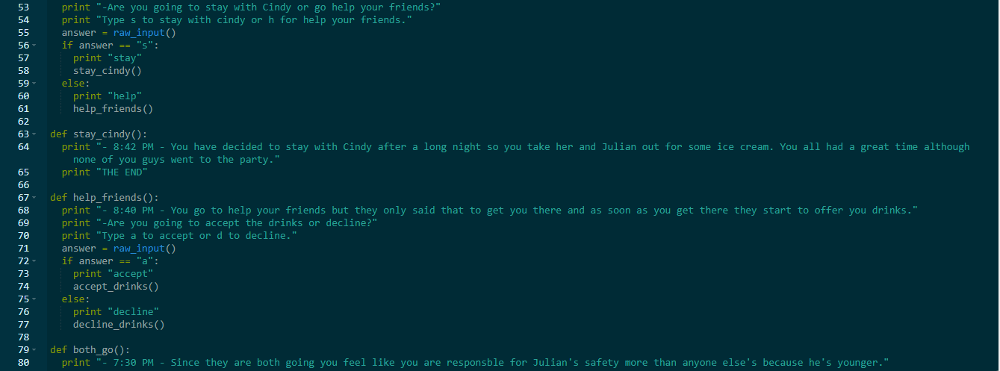Reflection:
This project compared to the two previous being the Scratch game and App was much easier. A flowchart was created before hand so that it could reduce the amount of time coding since the story is the main piece of the coding. The only negative to this interactive story is that occasionally my partner and I would forget where the next step or part of the story would lead to since there are many possibilities or choices that the user can pick from. Coding the story was no very stressful at all, in fact, we found it to be the most entertaining program we have made so far. The interactive story took a lot of cooperation since the responses to each choice had to be something that would lead the story to continue. My partner and I felt like we did not need more time because we had more than enough to even go back and double check that all spelling errors were corrected. Overall, the interactive story's coding was a great process.
Battleship (Python Game)
About the Game:
My partner and I both enjoy playing games so while we were choosing from the list, the idea of recreating the iconic Battleship game was the one that made most sense. We knew that most of our other classmates had games that could potentially be fun like how we envisioned ours to be, however, what we really wanted over the other games was to be aesthetically pleasing even if it was on repl.it. We wanted to recreate the game to be much simpler that was user friendly, could notify users of any errors (like invalid coordinates), and pleasing to look at. Our game was liked by many of our fellow classmates because it did what it was suppose to do and more while not being too complicated in its design.
Battleship Coding:
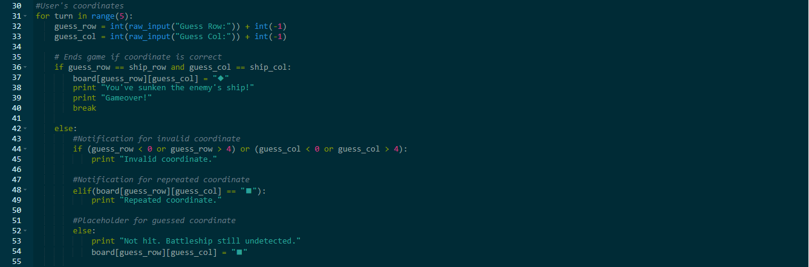Reflection:
The program turned out to be a lot better of a game than I had originally thought. My partner and I thought it was going to be difficult to get it to looking aesthetically pleasing while being a simple enough game that most users would not even need any extensive directions. We received much positive feedback during alpha and beta testing and also in its final version. We managed time well in the fact that we were able to refine our coding for the game to work as smoothly as possible even if the user were to type in coordinates that are way outside the 5x5 grid. We found it was best to give users only 5 tries because any more than that would just be too easy. Things went well for us during the process because some of the requirements like having algorithms and a test function were already implemented because it helped us, not because it was needed for a higher grade during the submission of our project. My partner and I did not experience problems with time management because we were able to work on it at home since we are brothers. Our battleship game could have have use maybe one improvement in its coding which was a function to deal with letter inputs in case the user accidentally typed it instead of a number. Other than that we only really wanted for the box to be marked with an X if the player guessed the right coordinate. We found the Python Game to be a little challenging but it was manageable with its difficulty because it had become a personal favorite out of the other projects we had done in class.
Image Artist (Python Activity 1.4.7)
About the Image Filter:
My partner and I wanted to create a filter that was not as simple as cropping the corners to become round and leave it as is so instead we opted for a filter that would make it look like old televison. The filter makes an image black and white while having the static speckles.
Original Image:
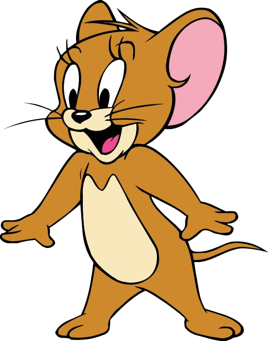Image After Filtered:

Coding / Input:
After importing the image we had two define functions. We simplified much of our original program so that it was easier to read and look at while functioning just as well and how we wanted it to. The first define is the overlay of our static image. What this function does is that it layers an image of televison static over our original image of Jerry while having its opacity lowered. This will allow the original image to be shown still. The function sets the black and white version of the image as the background and the static image as the overlay. Keeping in mind that the image must be the same dimensions, which is shown through lines 13-19 of the coding, the background will be pasted with its slightly translucent overlay.
The black and white function is to top it off by having the colored image now be black and white. It looked too awkward to have a static filter over an image if it was still colored so by making it black and white we accomplished the look through an old television. The function converts the original colored image to being black and white from lines 25-29 with its most important component being color_image.convert.
Reflection:
My partner, Deo, and I struggled for the first two days of working on the coding for this filter. We found sources online that helped us a little but for the most part it was near useless. We do give credit, however, to Stack Overflow because it was where we were able to find out how layer the same dimensioned picture over another. It was not until the last day we had to work on the project that we actually had the code functioning properly. Our main issue with this process was that we were not too familiar with overlaying and changing opacity. The project was not as long as some of our other ones but it was great practice for us since it made us improve in Python.
Malware Presentation: Mydoom Worm
About the Worm:
My teacher, Mr. Engstrom gave us the opportunity to present a malware virus that affected the internet. I paired with David for this project and we both agreed on the Mydoom Worm since it sounded interesting. The worm had affected many computers throughout the United States through a link sent in an email. Mydoom opens malware through the computer's security system when it is open and vulnerable.
Presentation:
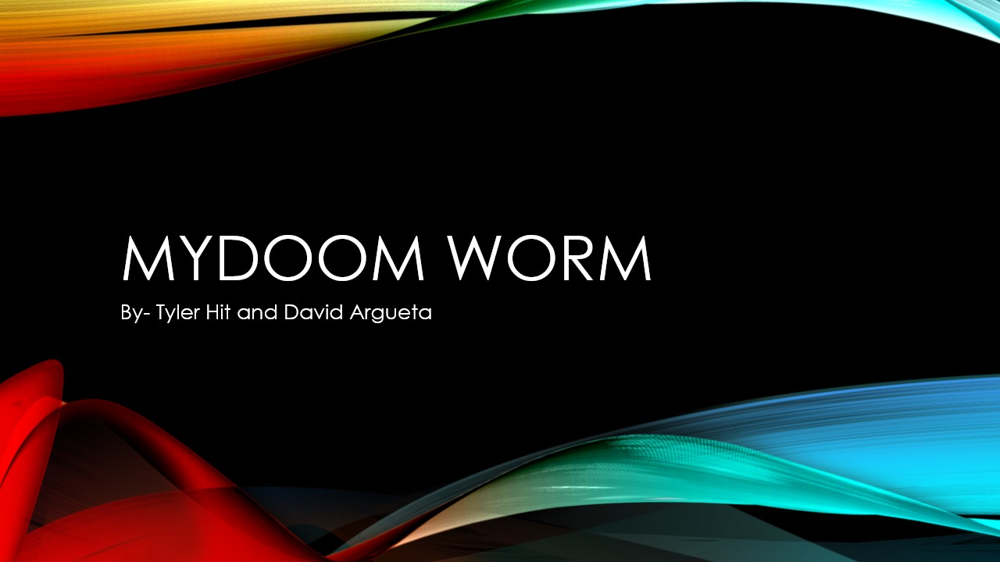 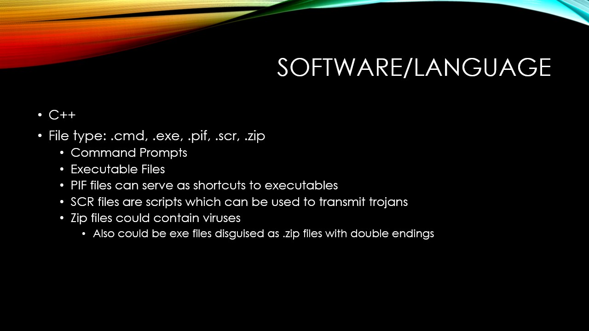 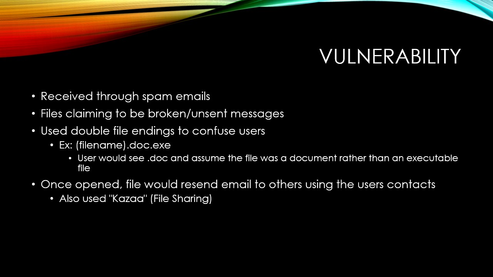 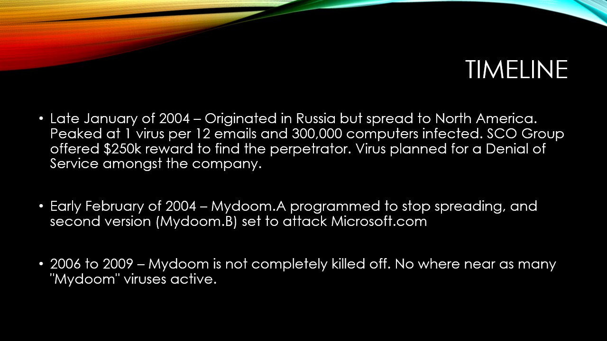
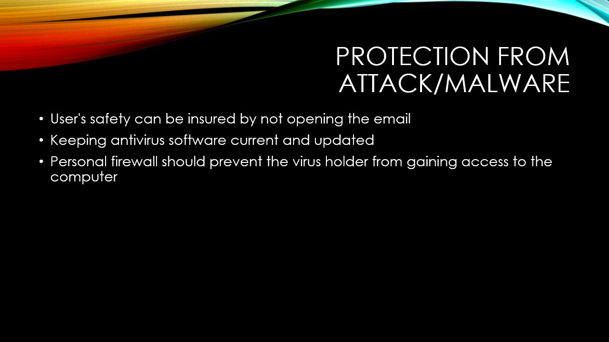
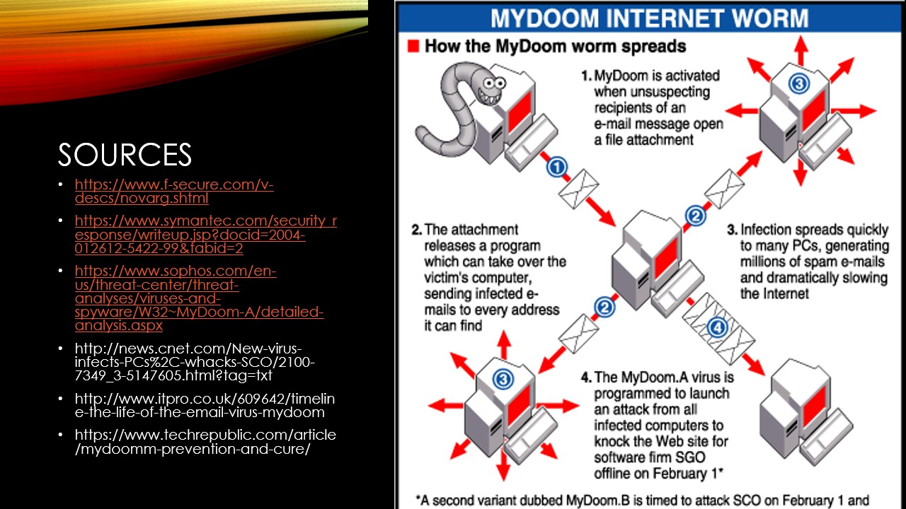
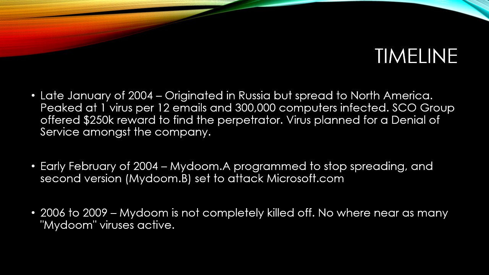
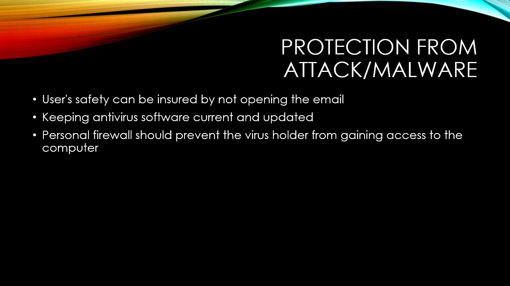
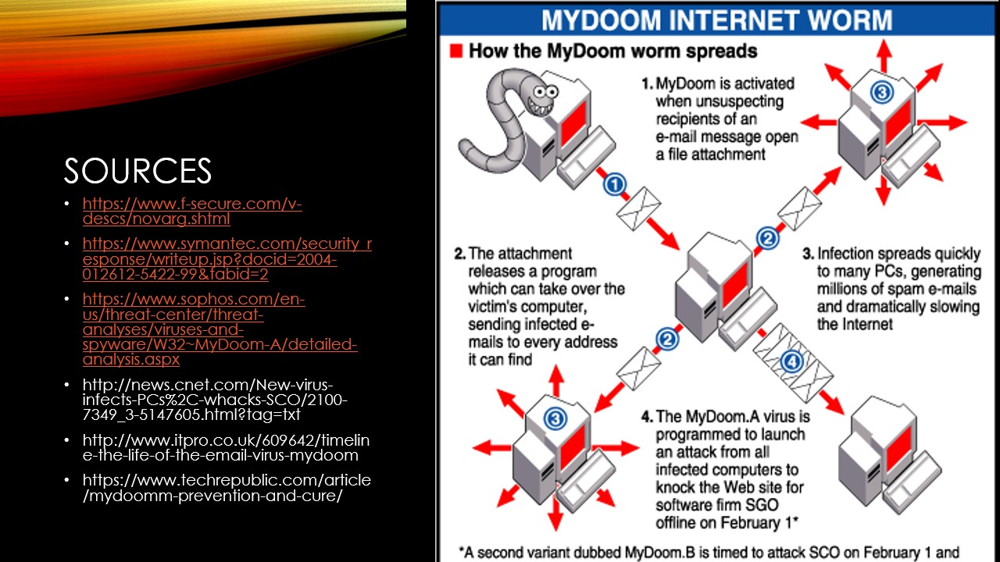
Reflection:
We learned quite a bit from creating this presentation. I learned that in the early 2000s, viruses were often obtained through emails and links which is different from today where it is often an ad or download. We both found it to be interesting that millions of computers were affected by the worm and that it was unrecognizeable that it was a virus or worm since it was disguised as a poorly written email. The presentation taught me things that I previously did not know about viruses. It also allowed me to work on my teamworking since it required my partner and I to present the powerpoint to the class. Like all presentations, I was nervous, but it did provide more practice in for me and my partner as well.
Big Data Presentation
About the Moral Storytelling System:
In computer science all students were to give a presentation on big data and I chose the Moral Storytelling System. My reason was that I am really interested in filmmaking and cinematography so I wanted to choose a project that would relate to my future career. The system allows all users to create a story based on inputted emotions. It can also take in initial situations and certain outcomes to better adjust to the user. Although the system works better the more the program is used due to big data, it limits the user from being creative to their own extent.
Presentation:
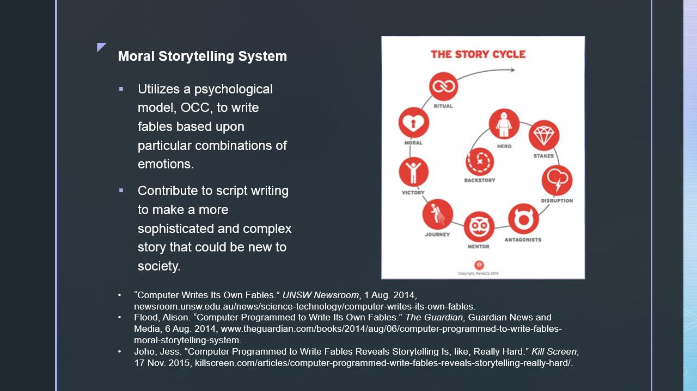Reflection:
I found that when I was creating the presentation it seemed quite useful at first. I then learned that the system basically takes the work from ones who are trully talented and creative. I understand why it is useful from an overall stand point and how it allows people to add on to their ideas when creating a story or script but it is only a program that can go so far. I learned much about big data and the presentation has helped me understand it better because I was confused about the topic before hand. I now know that big data is basically data about data. For example, data can be the colors of each pixel for a digital photograph while big data can be the time the photo was taken, the settings the camera was on, or even where it was taken. It was interesting to see other students' presentations as well since it futhered my knowledge upon big data.
Data Analysis
About Data Analysis:
We were given a project to go over which was on data analysis. For a week or so prior we were going over how to make bar graphs, line graphs, and pie charts so this was to check if we knew how to tie in our knowledge on them and apply it with something we like. My partner, Andrew, and I chose to do something video game related and came up with how were sales for Nintendo throughout the year of 2017 amongst their own devices.
Chart:
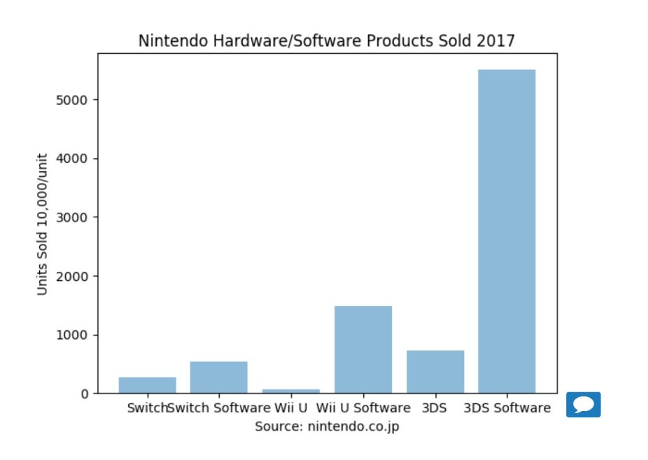Reflection:
We thought it was interesting how sales went in regard to the Switch, Wii U, and 3DS. We gathered the data from a reliable source that was not in form ready to plug directly into the chart. This taught us to manually input it so that we know the mechanics that happended behind it all. We did not do so well on our submission due to misunderstandings between the text and eachother, however, the chart turned out well and reflects the data we found online from Nintendo.
Simulation Modification
About the Simulation:
The orginal simulation shows how wildfire spreads through a forest depending on the density of the trees. We had to make a modification within the program, basically adding another component or variable. We chose to add in rocks and its density. The reason so is because we thought about how rocks would not catch on fire so we though if the rocks were present during a fire, would the wildfire go far?
Before Modification:

After Modification

Coding:


Reflection:
It was fascinating to see that we were right and that rocks being present in the environment surrounded by trees would have an effect. The modified program now allows us to mess with the density of rocks in the forest while still being able to for the trees as well. We found that if there are little trees and many rocks, the wildfire would not spread far at all. And if there were many trees and little rocks then the fire would spread further and easier, taking less paths and just moving as a large mass through the forest. If the rocks and trees were about even then the fire would not be able to burn out the entire forest. Though the simulation was quite simple, adding another variable allowed us to learn how to practice our coding more while doing an activity that was enjoyable.